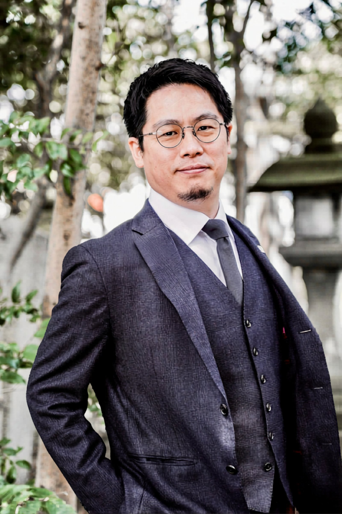

Turning Point転機

不安のなかで出会った、
もうひとりの自分。
2025年4月、脳梗塞が見つかりました。幸い早期発見で、運動機能や言語能力に影響はなかったものの、記憶力が少し衰えることが、しばしば。病気をきっかけに、将来への不安が募りました。
軽い鬱の症状が出たり、何かあるたびに病院で診てもらうことも増え、精神的に大きく疲れる日々。そんなときに出会ったのが、AIでした。
いまでは「からだの半分はAIが支えてくれている」と言っても過言ではありません。記憶力の悩みは和らぎ、会社のなかの課題もAIが解決してくれる場面が増え、もう切り離せない存在になりました。